From first check to final record.
One connected workflow for every trip, every trap, and every detail worth keeping. Plan before you head out, find your way in the field, and keep every record organized, even with no signal.
One connected workflow for every trip, every trap, and every detail worth keeping. Plan before you head out, find your way in the field, and keep every record organized, even with no signal.
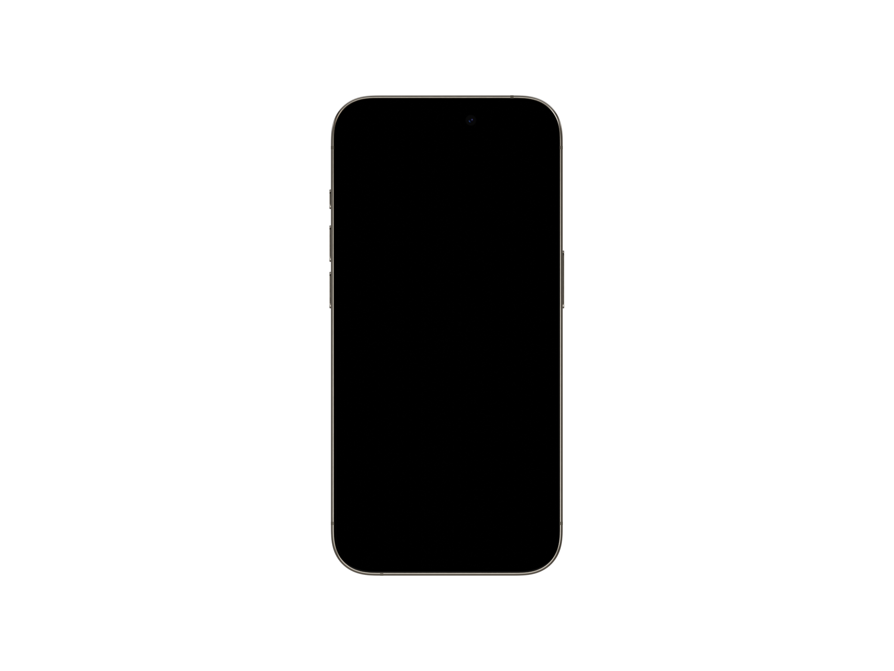
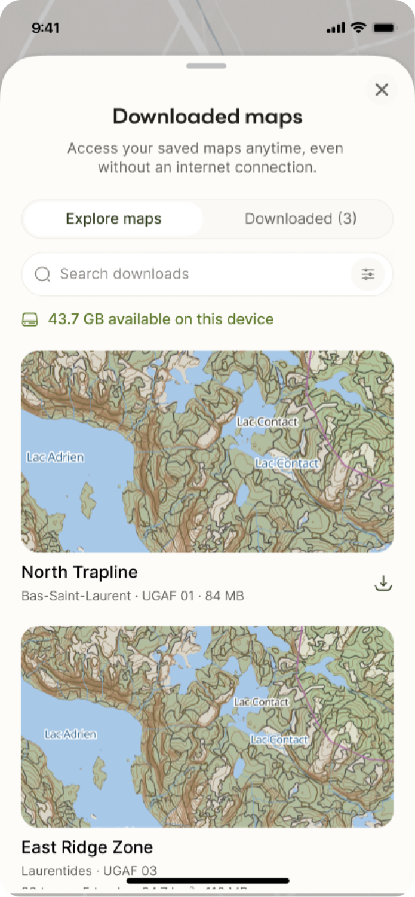
Download maps, mark trap locations, and plan your route before heading out.
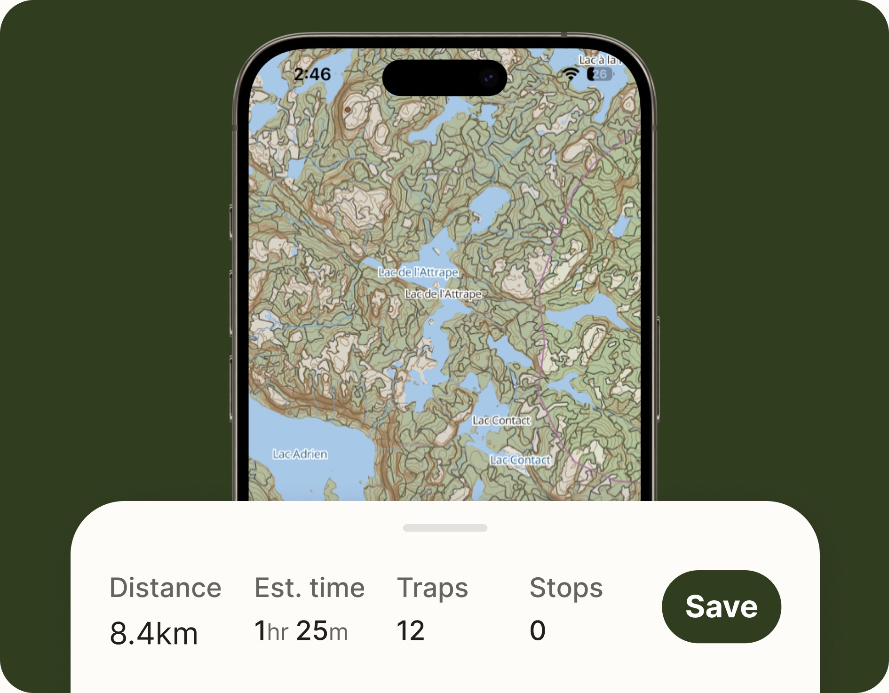
Navigate with GPS, locate your markers, and record trap visits and captures in the field.
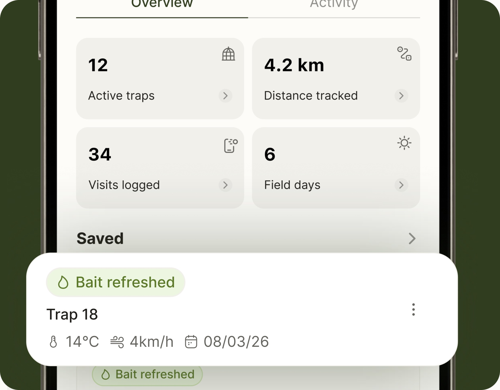
Review your field notes, track seasonal activity, and keep your records organized.
From planning your route to recording your latest capture, Trapline IQ keeps your entire trapping operation organized.
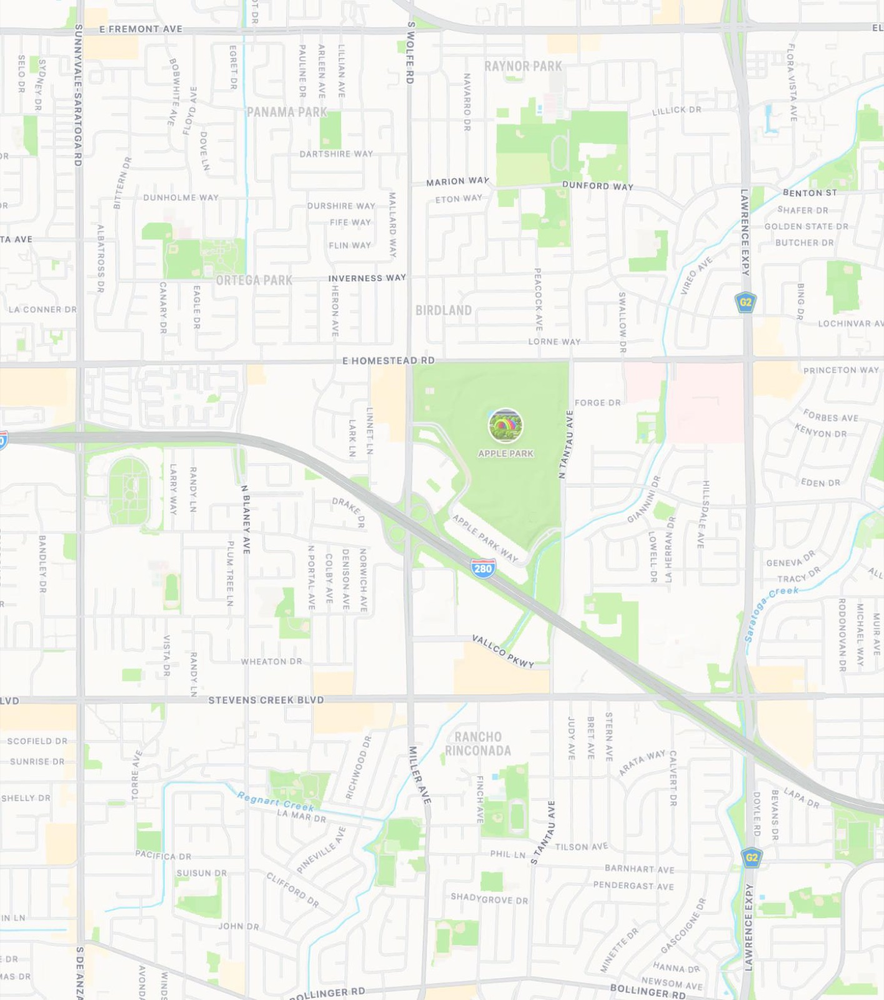
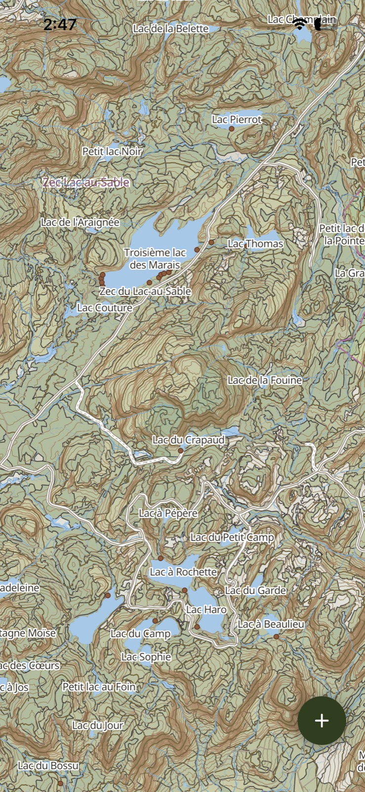
Add and manage traps, boxes and points of interest.
Download maps and navigate without internet access.
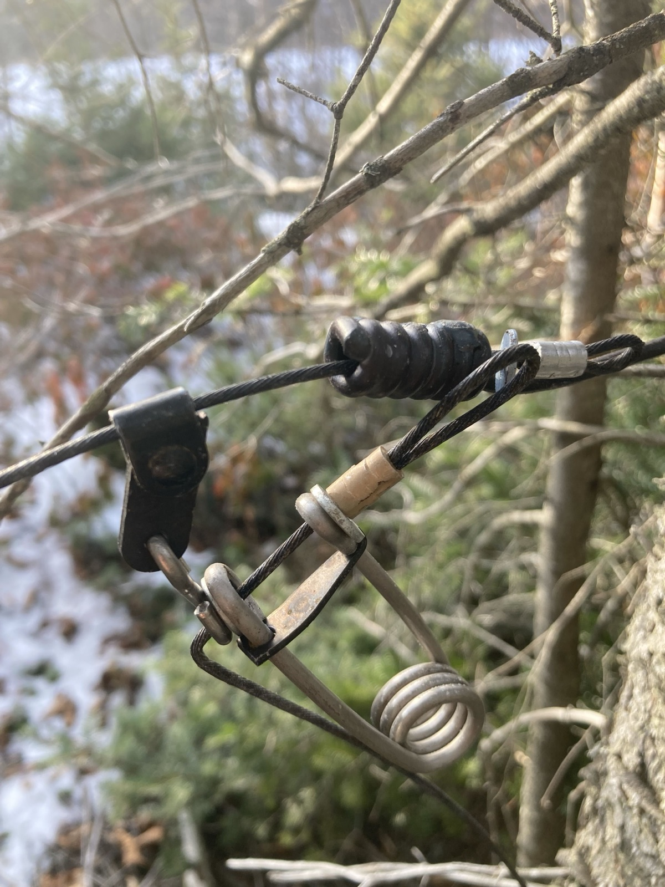
Create routes, save trails and track field movements.
Record trap visits, animal captures and trap activities.
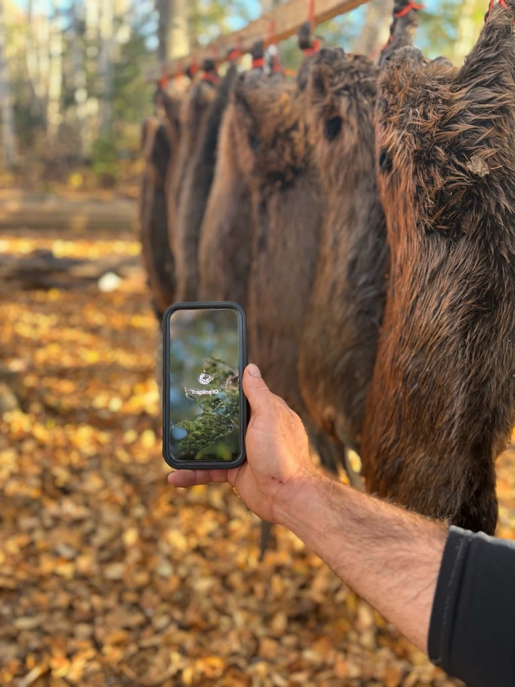
Log field days, observations and issues.
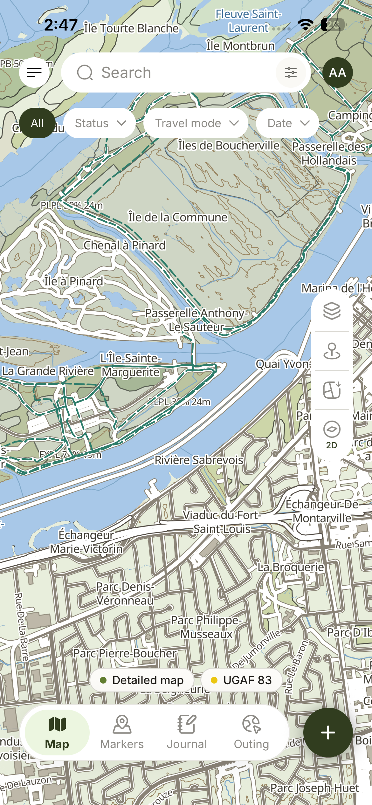
Organize outings and share field information.
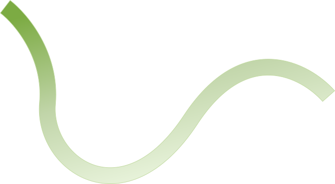
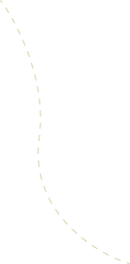
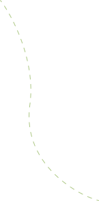
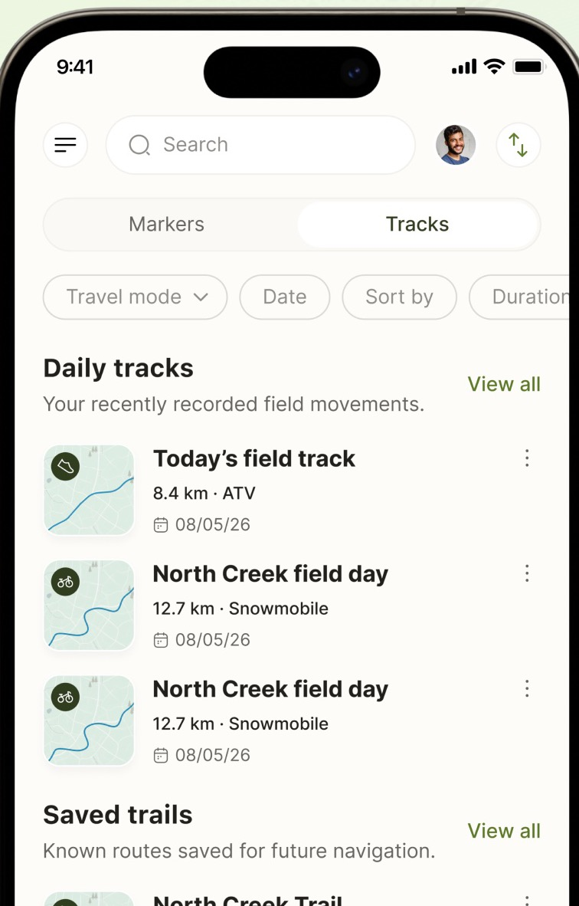
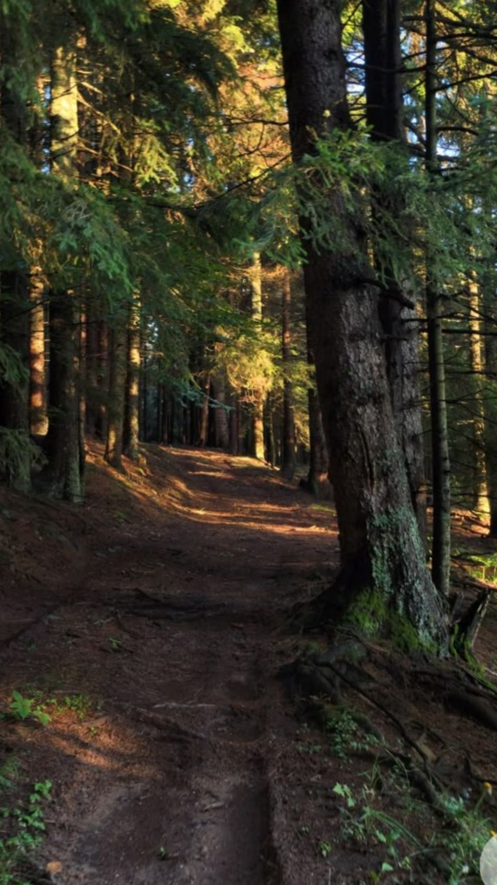
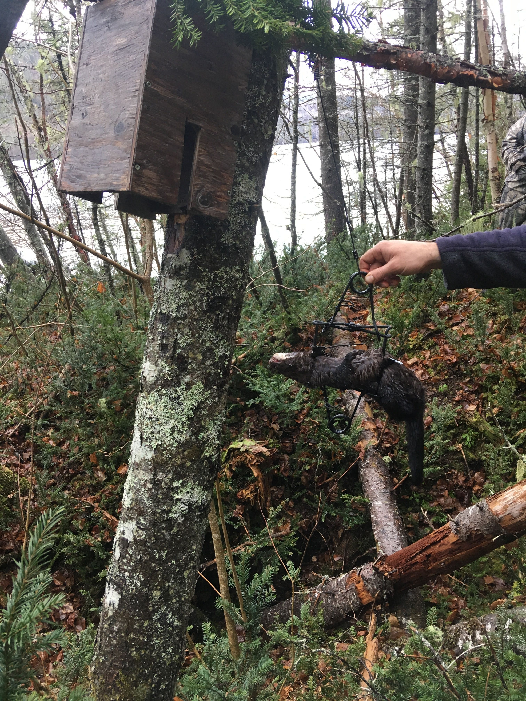
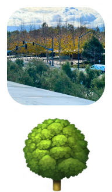
We're building more tools to make every trapping season easier. From homemade recipes to fur management.
Save snare and lure recipes with ingredients and instructions.
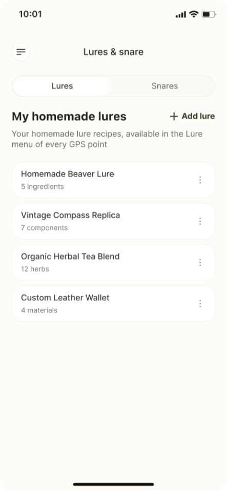
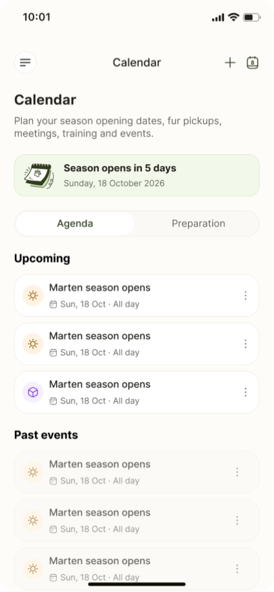
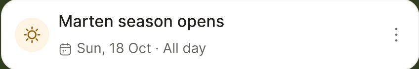
Plan trapping activities and track key dates with a seasonal calendar.
Track fur inventory, monitor preparation, and manage pelts and pickups.
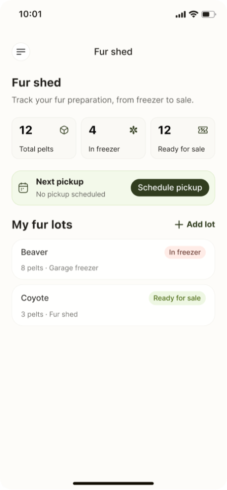